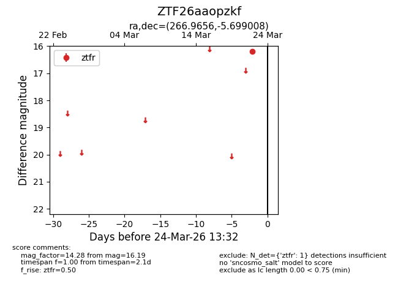
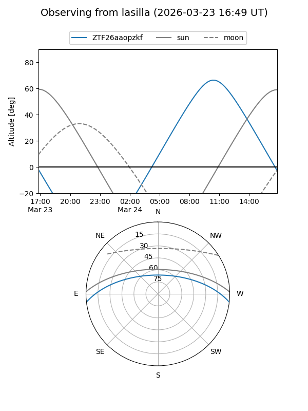
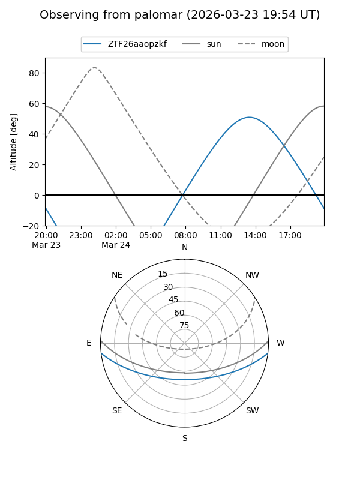

ZTF26aaopzkf
Target ZTF26aaopzkf at 2026-03-24 13:35
Aliases and brokers:
FINK: link
Lasair: link
ALeRCE: link
alt names
ZTF26aaopzkf (ztf,fink_ztf)
Coordinates:
equatorial (ra, dec) = 266.9656,-5.69901
equatorial (HMS+DMS) = 17:47:51.75,-05:41:56.43
galactic (l, b) = (20.4052,+11.37582)
Flags:
Photometry:
last ztfr=16.19
1 ztfr detections
Lightcurve

Visibility


Additional plots